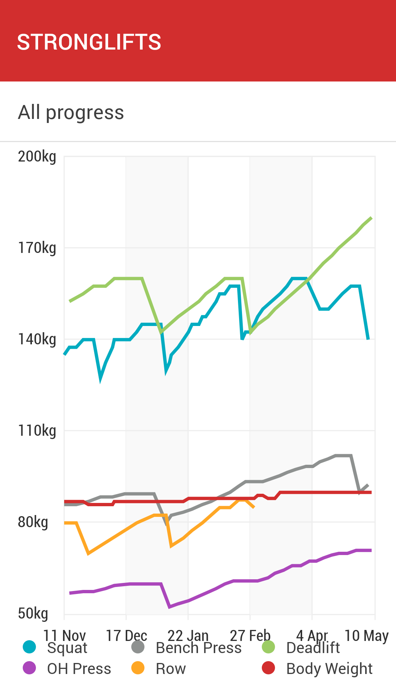

RSS Feed
RSS Feed
One Year of Weightlifting
12 May 2019Previously: Starting Weight Training, More Weightlifting Observations
Been lifting for more than one year now! So what's new compared to last time?
The last post ended in me saying training got me tired and switching to training only twice a week instead of three. This ended up lasting a bit less than three months until early-January, and in retrospect, it was a mistake. I probably should have done some kind of deload week instead and (a) eaten more, (b) slept more. More on this later. It's not entirely borne out in the data, but that period felt like a slog in terms of progress.

There is about two weeks of data missing between that graph and the last.
What else can be seen there? The 160kg squat is my new elusive nemesis. My max is once 2x157.5kg currently. Deadlift stalled at 160kg for a bit, but then took off. I finally broke 100kg on the bench press.
Revamped Program
I finally changed my program! Or more properly, extended it. Previously, I'd been running classical Stronglifts which had two workouts: squat, bench press and barbell row for workout A; squat again, overhead press and deadlift for workout B. What I did was drop the barbell row altogether (I described my frustration with it last time and it did return), and drop the squat from workout B.
To supplement this, I integrated exercises from Jeremy Ethier's full body workout, excepted the "High to Low Cable Flies" — couldn't fit it in the schedule and this requires two cables systems, which tend to be fairly busy machines.
I effected this change at around the start of March, as you can see from the row disappearing from the graph above. There is also a correlation with the deadlift finally taking off.
To track the new workout, I'm using (in addition to the Stronglifts app) an app called Simple Workout Log. I'm afraid it doesn't generate a graph for all exercises, and generating one per exercise would be unwieldy however.
The workout is more body-building oriented than my previous strictly power-lifting routine. Except for the barbell row, all the Stronglifts lifts (the "big lifts") also appear in the new workout. For them I kept the Stronglifts progression and the focus on lifting heavy. For the other exercises however I used Jeremy's guideline.
The result was increased volume. I finally look somewhat obviously muscular. Although a lot of that had to do with nutrition.
Nutrition & Measurements
In January, I started actively tracking both my calorie expenditure (with a Fitbit Charge 2 that was actually loaned to me by my colleague Sana for data-mining purposes) and my calorie expenses (using the MyFitnessPal app, just like about everybody).
The goal was to eat more to enable gains. My objective was to try to reach 3200 calories every day, and 3600 up to 4000 on workout days.
That (later and the workout change outlined above) worked nicely in enabling some further mass gains.
I also bought a smart scale, but I'm not that happy with it. It's accurate on weight, but the bodyfat percentage given is wildly off: it has me at 13% which would have me quite ripped — a more accurate scale gives 17%, which is in line with picture references. Still, it can tell you if you're trending up or down and some indication of the magnitude. Here's what I bought so you can avoid it. The more accurate scale is a big one at the gym. Apparently you have to look for "dual frequencies" scales, but I couldn't find any.
I did get a lot of mileage out of a kitchen scale however, in order to get more correct inputs into MyFitnessPal.
Next Up: Cutting
The next step is already underway: I'm going to "cut" to reduce bodyfat and obtain the sacro-sanct six pack.
I probably could have gained some more, but now feels like a nice time to try to achieve this milestone, while I'm finishing my PhD and still have flexibility in my schedule. It's always harder to do something on the first go, as there are things to figure out, and mistakes will necessarily be made.
I've been easing into it for three weeks, and early signs are encouraging. However, a full discussion will have to wait for later!